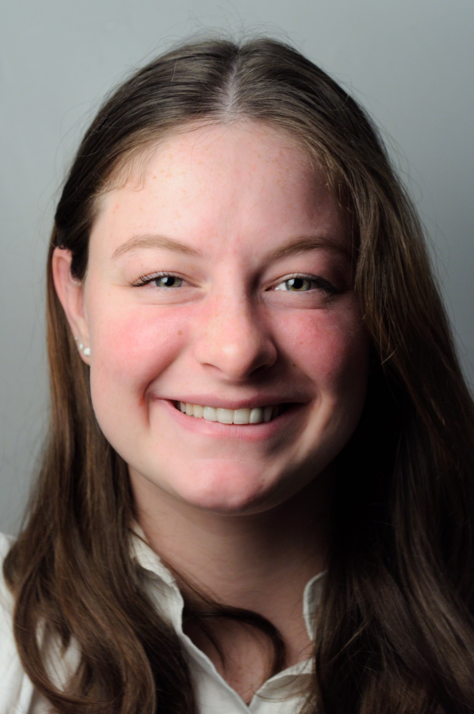
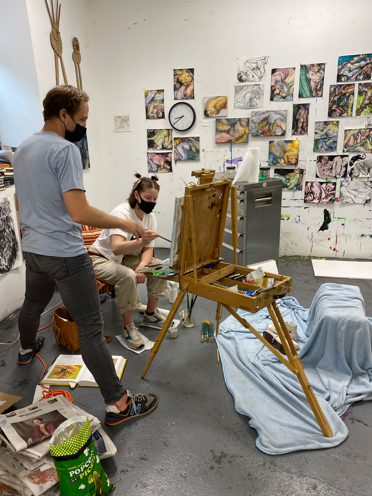
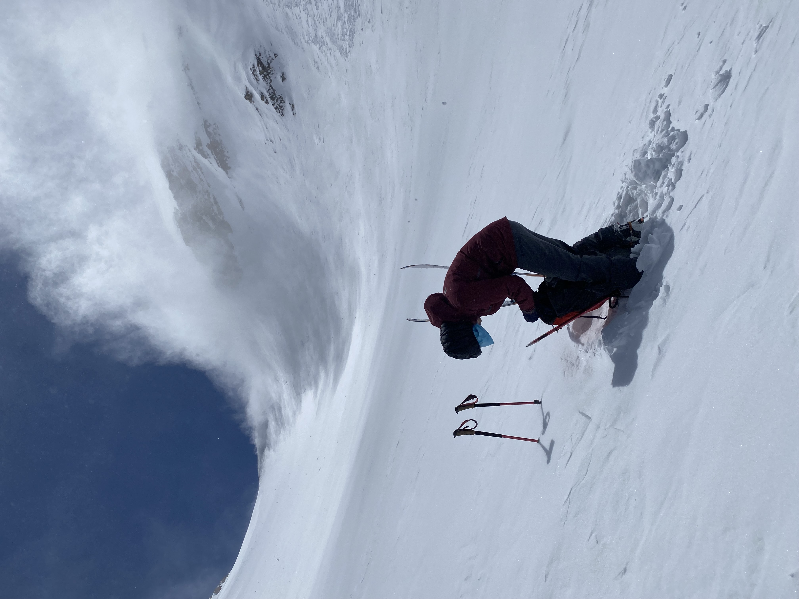
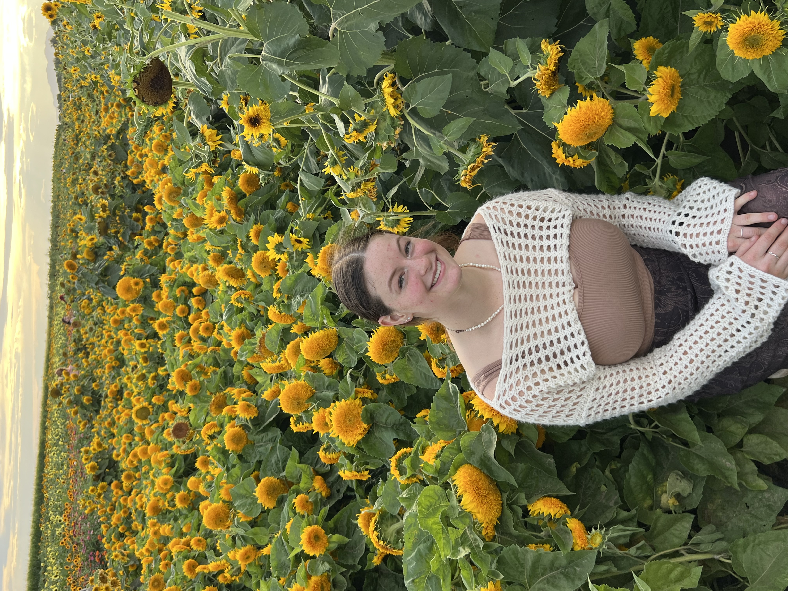
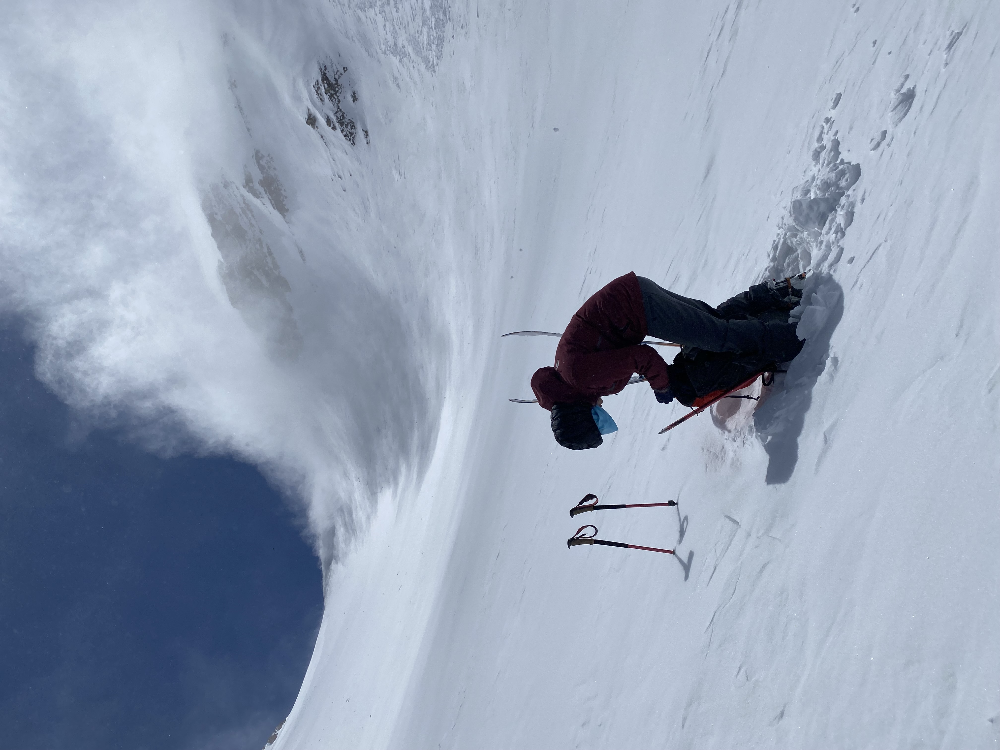
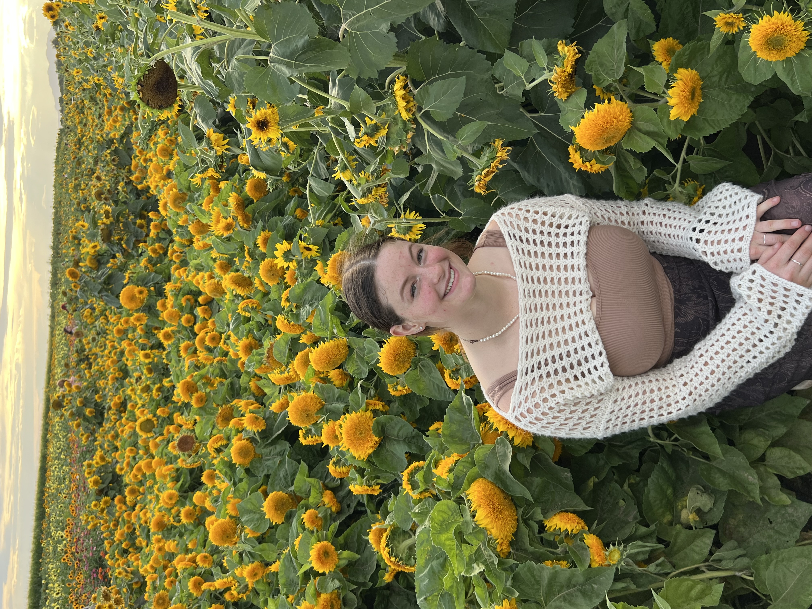

Contact

About me

 



Leisel
Crawford Taylor
Crawford Taylor
CS Projects
Art
Home
Shop
Ski touring on Mt. Timpanogos in UT
Enjoying the northern UT sunflower festival
Still-Life painting practice in NYC
Ski racing in Jackson Hole
Ski touring up the Twin Peaks, UT
Hi, my name is Leisel Crawford Taylor and i'm currently a junior undergrad at the University of Utah studying Software Development.
My main Interests in software lie in UX/UI design, and Human-Centered computing. My graduation is in the spring of 2026. I am currently a member of the society of women engineers.
I enjoy skiing, rock climbing, painting, embroidering, sewing, crochet, silversmithing, and more! Check out my "Art" tab to see photos or “Shop” to purchase my work.
My main Interests in software lie in UX/UI design, and Human-Centered computing. My graduation is in the spring of 2026. I am currently a member of the society of women engineers.
I enjoy skiing, rock climbing, painting, embroidering, sewing, crochet, silversmithing, and more! Check out my "Art" tab to see photos or “Shop” to purchase my work.